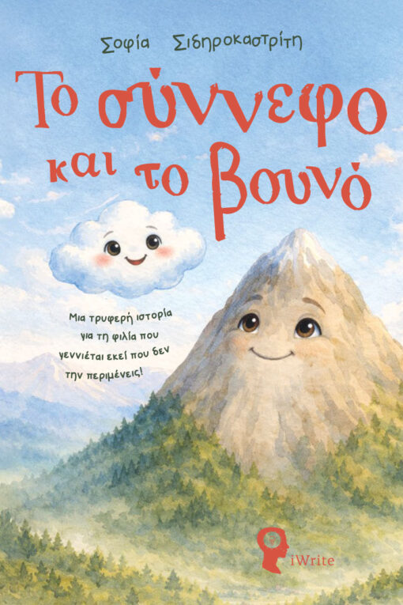
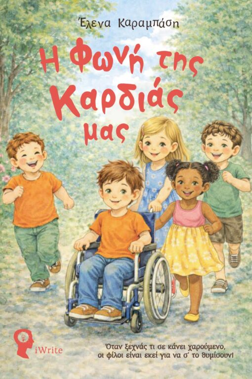
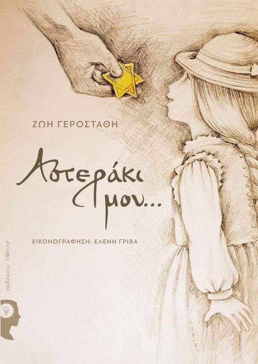
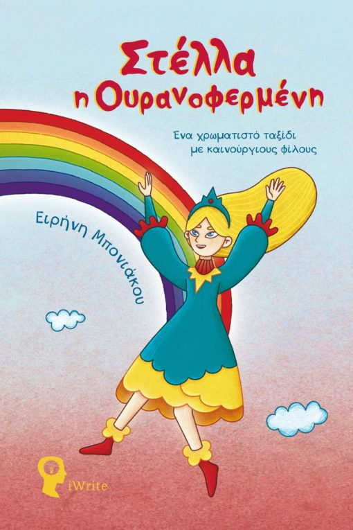
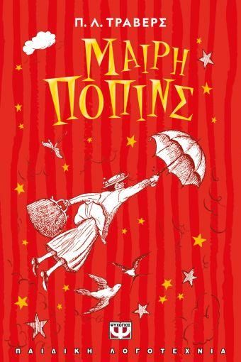

Βιβλία κατάλληλα για μικρούς αναγνώστες. Μέσα από αυτά θα βρουν φίλους, θα ζήσουν περιπέτειες και θα πάρουν μαθήματα ζωής, μέσα από κόσμους γεμάτους ζεστασιά και φαντασία.
|
 Το βιβλίο "Το σύννεφο και το βουνό" της συγγραφέως Σοφίας Σιδηροκαστρίτη μιλάει για τη φιλία την προσφορά, την απώλεια και την ελπίδα. Δείχνει στα παιδιά πως οι αληθινοί δεσμοί δεν χάνονται ποτέ. Ψηλά στον ουρανό, ένα μικρό σύννεφο γεμάτο σκανταλιές συναντά ένα περήφανο βουνό που αγαπά την ησυχία. Στην αρχή συγκρούονται, αλλά σύντομα γεννιέται κάτι πολύτιμο: μία αληθινή φιλία. Όταν ο χρόνος τούς χωρίσει θα μείνει μόνο η ανάμνηση ή μήπως και η ελπίδα για μία νέα αρχή; Εκδόσεις iwrite |
 Το βιβλίο "Η φωνή της καρδιάς μας" της Έλενας Καραμπάση είναι μία ιστορία για τη φιλία, τη διαφορετικότητα και τη δύναμη της αλλαγής. Ο Στέλιος είναι ένα γελαστό, ζωηρό παιδί που λατρεύει το ποδόσφαιρο! Όμως ένα ξαφνικό ατύχημα τον καθηλώνει σε αμαξίδιο και αλλάζει όλη του την καθημερινότητα: χάνει τις μνήμες του, η αυτοπεποίθηση του μειώνεται και απομακρύνεται από τους φίλους του.Στην προσπάθεια να ξαναβρεί τον εαυτό του, η κολλητή του η Νέλλη, ο παππούς Αντώνης και η αγαπημένη του παρέα τον βοηθούν να δει τα πράγματα αλλιώς. Εκδόσεις iwrite |
 Πώς να μιλήσεις στα παιδιά για το ολοκαύτωμα. Πώς να βάλεις στην παιδική ψυχή τόσο τρόμο και παραλογισμό;
Ένα κουτί γεμάτο χάρτινα παιδικά αστεράκια και ένα ριγέ φόρεμα γίνονται η αιτία για να βγάλει απ’ την ψυχή της
η προγιαγιά της μικρής Ρεβέκκας τον τρόμο και τον παραλογισμό που έζησε στα χρόνια της κατοχής.
Τα αγαπημένα χάρτινα αστεράκια που με τόση χαρά μάζευε σαν έπαθλο η φίλη της εγγονής της, κάθε φορά που την επαινούσαν,
της έφεραν στη μνήμη εικόνες που είχαν κρυφτεί στα βάθη του μυαλού της και μεταμορφώθηκαν σε λέξεις.
Λέξεις που γνώρισαν στις δύο φίλες ένα κομμάτι της ιστορίας που όλοι θέλουμε να μην επαναληφθεί ποτέ. Εκδόσεις iwrite |
 Σε έναν υπέρλαμπρο κόσμο αλλά μακρινό από τον δικό μας, ζει ένα πολύχρωμο πλασματάκι που το λένε Στέλλα. Τα χρώματά της είναι η δύναμή της και με παρέα την περιέργειά της απολαμβάνει τον κόσμο της γνωρίζοντας καθετί καινούργιο. Μια μέρα, εκεί που όλα ήταν τέλεια όπως πάντα, έμαθε κάτι εντελώς ασυνήθιστο. Άκουσε ότι κάποιοι άλλοι κάτοικοι ζουν εκπληκτικά, ενώ ο κόσμος τους δεν είναι τέλειος. Λίγο το ότι δεν είχε ξανακούσει κάτι παρόμοιο, λίγο η περιέργειά της, ένα γρήγορο συμπέρασμα ότι κάποιο λάθος κάνουν, δεν άργησε να βρεθεί στη νέα χώρα με σκοπό να το διορθώσει. Η γνωριμία της όμως με αυτούς τους κατοίκους δεν ήταν αυτό που περίμενε και ανάμεσα σε εκπλήξεις και περιπέτειες, ξέχασε εντελώς το λάθος που έψαχνε. Τα μαγικά της χρώματα όμως δεν το ξέχασαν παρ’ όλα αυτά και της αποκάλυψαν ένα μυστικό που την άλλαξε για πάντα! Εκδόσεις iwrite |
 Όταν φυσάει ο ανατολικός άνεμος και φέρνει τη Μαίρη Πόπινς στο σπίτι της οικογένειας Μπανκς, έρχονται τα πάνω κάτω στη ζωή των παιδιών της οικογένειας. Πάνω από ογδόντα χρόνια έχουν περάσει από τότε που συναντήσαμε για πρώτη φορά τη Μαίρη Πόπινς, κι αυτή η πρωτότυπη κλασική ιστορία εξακολουθεί να μαγεύει τους αναγνώστες και να οδηγεί νέους θαυμαστές στον μυστηριώδη κόσμο της αγαπημένης μαγικής νταντάς όλων μας. Εκδόσεις Ψυχογιός |